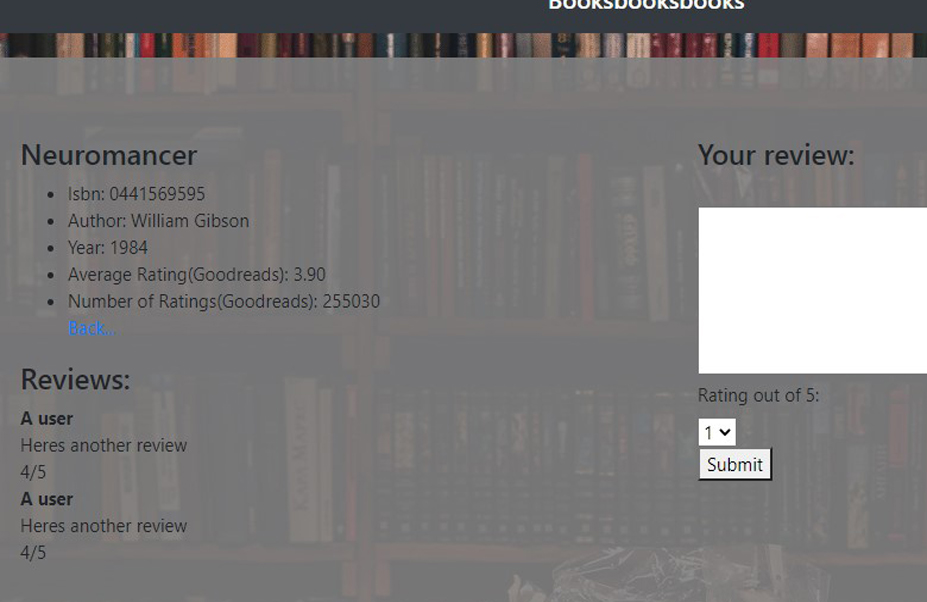
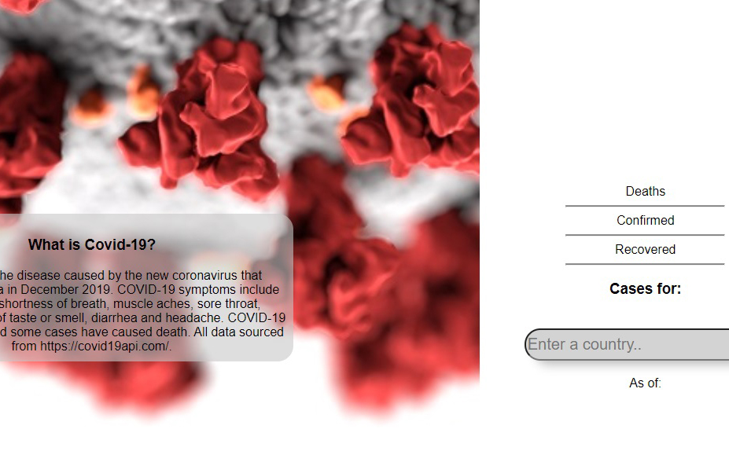

Books
A web app made using Python and Flask. Users are able to log in, and search for books by author, year, isbn, and title. Goodreads api integration for extra details on the book you search for. /api followed by isbn returns json object with data for the related book. SQL database used to store users, hashed passwords and list of books.

Laner Electric
Laner Electric is a landing page for a local electrical supply company. Mobile-responsive via bootstrap and scss/css media queries. Google Maps API implementation using Javascript. Users are able to place an order using the order form, and a simple email template with the details is sent to the store using formspree.io.

Coronavirus Tracker
A simple web app using https://covid19api.com/ to display data for a specific country.

About Me
My name is Elias Cazessus. I am a front-end web developer based in the San Francisco Bay Area. Currently, I am studying mobile app development using React Native as part of Harvard/edX's CS50 program. My Skills include: HTML5, CSS, Javascript, Python, and two popular frameworks for python, Django and Flask. Other technologies and languages I am familiar with, are: Git, PostgreSQL, Ruby, Sinatra, SASS and design software such as Photoshop and GIMP.